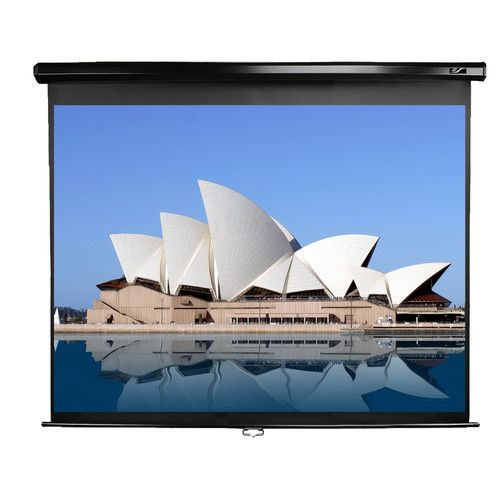
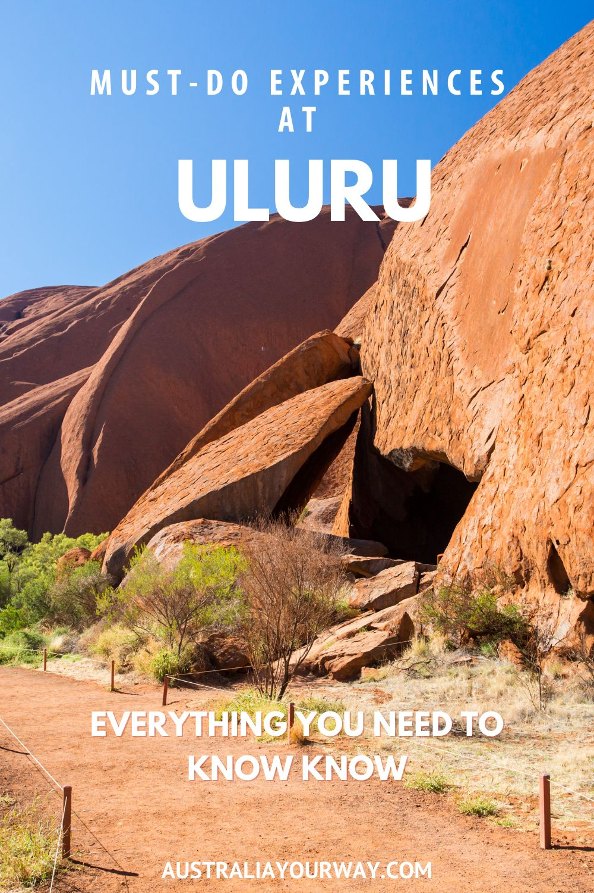
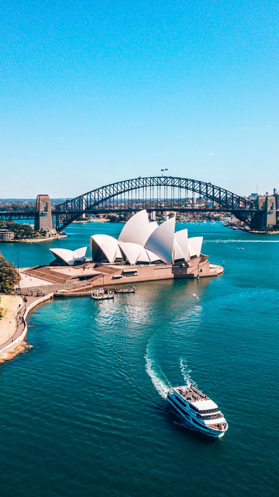
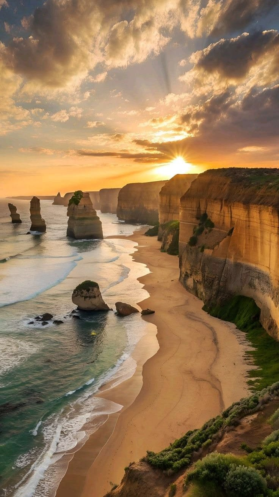

✨ Incredible Australia ✨

Sydney Opera House
An iconic performing arts center in Sydney, known for its unique sail-like design.

Great Barrier Reef
The world's largest coral reef system, famous for its marine biodiversity and beauty.

Uluru
A massive sandstone monolith in the Northern Territory, sacred to Indigenous Australians.

Sydney Harbour Bridge
A famous steel arch bridge offering panoramic views of Sydney Harbour.

Twelve Apostles
Stunning limestone stacks located along the Great Ocean Road in Victoria.